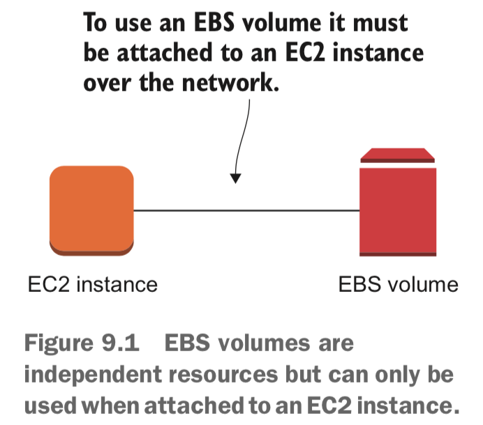
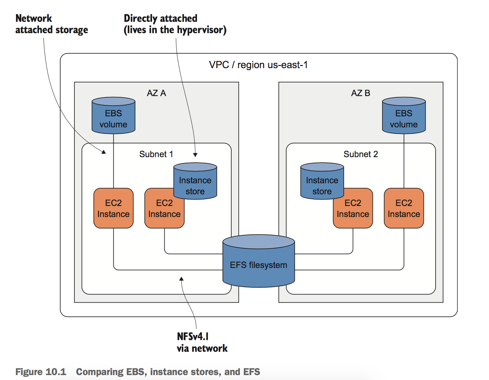
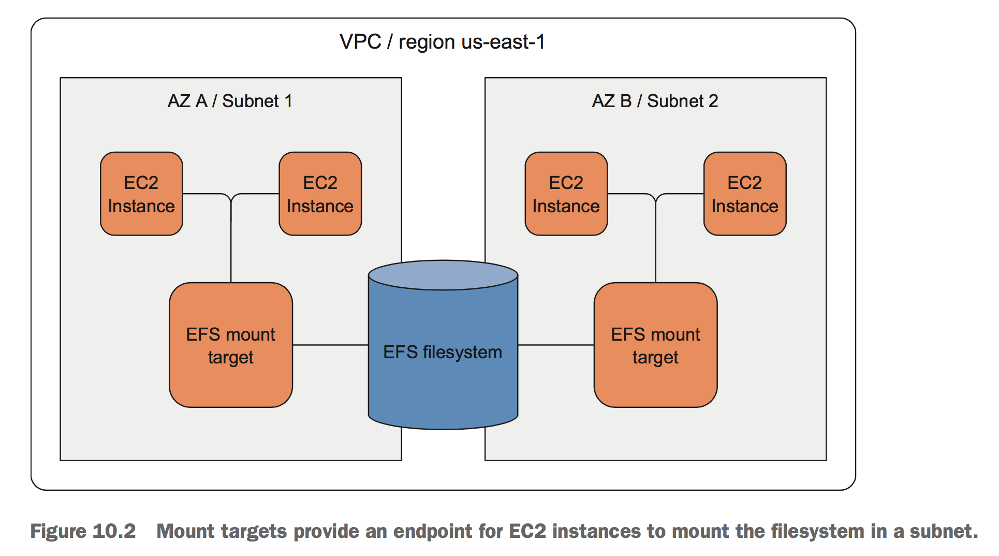
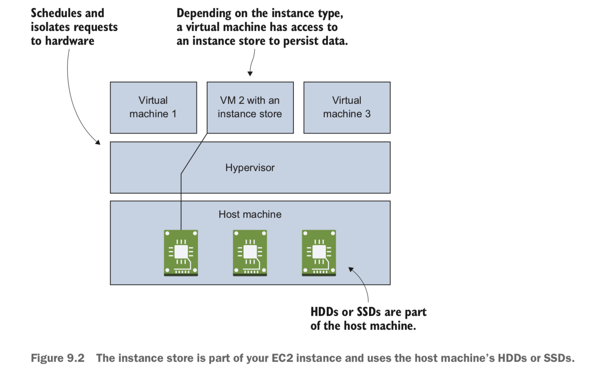
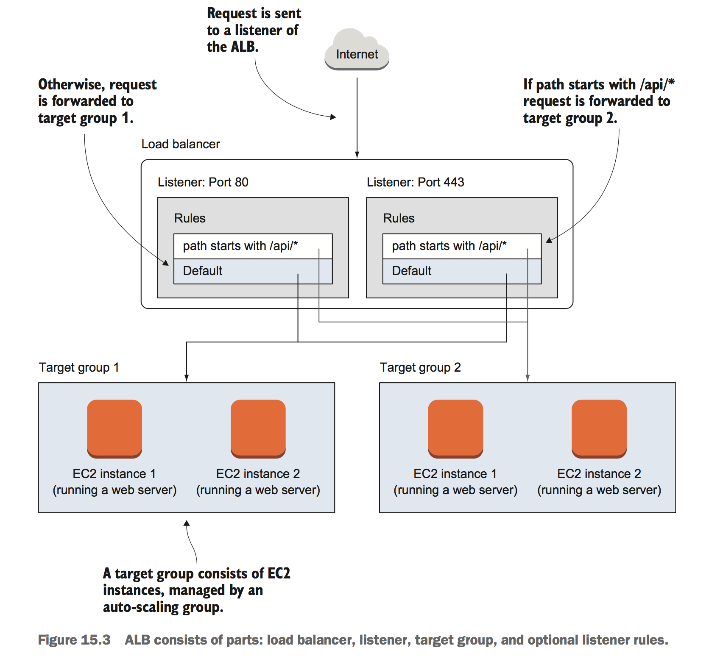
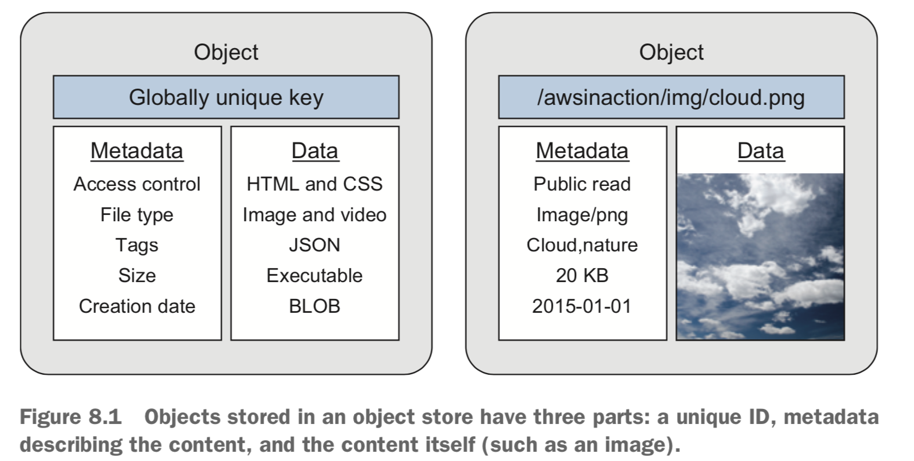
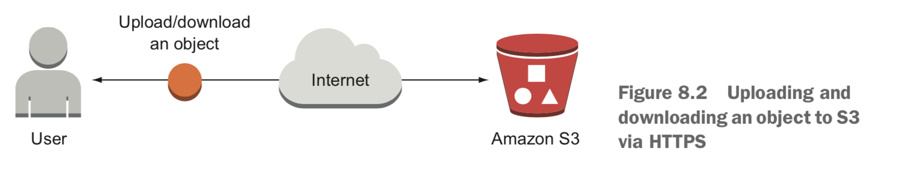
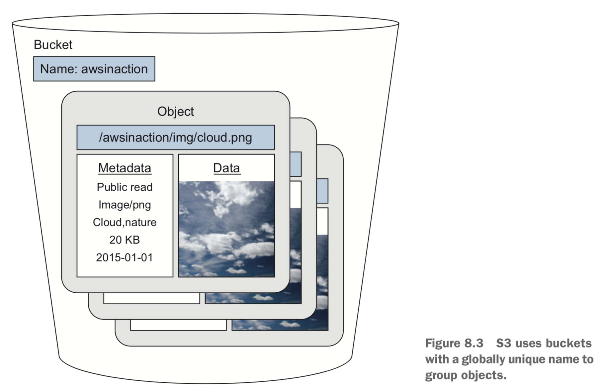

AWS
Table of Contents
| Author | Hao Ruan (haoru@cisco.com) |
| Date | 2020-02-02 14:41:11 |
Table of Contents
1 EC2
1.1 Instance Families

- T family Cheap, moderate baseline performance with the ability to burst to higher performance for short periods of time
- M family General purpose, with a balanced ration of CPU and memory
- C family Computing optimized, high CPU performance
- R family Memory optimized, with more memory than CPU power compared to M family
- D family Storage optimized, offering huge HDD capacity
- I family Storage optimized, offering huge SSD capacity
- X family Extensive capacity with a focus on memory, up to 1952 GB memory and 128 virtual cores
- F family Accelerated computing based on FPGAs
- P, G, and CG family Accelerated computing based on GPUs
1.2 User Data
The user data is always accessible from the VM with a HTTP GET request to http://169.254.169.254/latest/user-data .
1.3 EBS
Elastic Block Store (EBS) provides persistent block-level storage with built-in data replication (Replicate your data on multiple disks to
prevent data loss due to hardware failures).
An EBS volume is separate from an EC2 instance and connected over the network.
EBS is either not attached to an EC2 instance or attached to exactly ONE EC2 instance at a time. You can't attach the same EBS volume to multiple virtual machines!
EBS volume is tied to a data center (also called an AZ) and can only be attached over the network to a single EC2 instance FROM THE SAME DATA CENTER.

Usually, EBS volumes can be found somewhere in the range of /dev/xvdf to /dev/xvdp.
The root volume (/dev/xvda) is an exception: it's based on the AMI you choose when you launch the EC2 instance,
and contains everything needed to boot the instance (OS files).
1.3.1 Snapshot
A snapshot is a block-level incremental backup that is stored in S3.
If your volume is 5 GiB in size and you use 1 GiB of data, your first snapshot will be around 1 GiB in size. After the first snapshot is created, only the changes will be saved to S3, to reduce the size of the backup.
1.4 EFS
EFS filesystem can be used by multiple EC2 instances from different data centers.

1.4.1 Filesystem and Mount target
- Filesystem Stores your data
- Mount target Makes your data accessible

Filesystem is the resource that stores your data in an AWS region, but you can't access it directly.
It is located in an AWS region and replicates your data under the covers across multiple availability zones.
To do so, you must create an EFS mount target in a subnet.
The mount target provides a network endpoint that you can use to mount the filesystem on an EC2 instance via NFSv4.1.
The EC2 instance must be in the same subnet as the EFS mount target (but you can create mount targets in multiple subnets).
1.5 Instance Store
An instance store provides block-level storage directly attached to the machine hosting your VM.
It is part of an EC2 instance (not standalone resources like EBS volume) and available only if your instance is running;
it won't persist your data if you stop or terminate the instance.

Don't use an instance store for data that must not be lost; use it for caching, temporary processing.
1.6 Load Balancer
1.6.1 ALB
An ALB consists of three required parts and one optional part:
Load balancer
Defines some core configurations, like the subnets the load balancer runs in, whether the load balancer gets public IP addresses, whether it uses IPv4 or both IPv4 and IPv6, and additional attributes.
Listener
The listener defines the port and protocol that you can use to make requests to the load balancer.
If you like, the listener can also terminate TLS for you. A listener links to a target group that is used as the default if no other listener rules match the request.Target group
A target group defines your group of backends. The target group is responsible for checking the backends by sending periodic health checks.
Usually backends are EC2 instances, but could also be a Docker container running on EC2 Container Service or a machine in your data center paired with your VPC.Listener rule
(_Optional_)
You can define a listener rule. The rule can choose a different target group based on the HTTP path or host.
Otherwise requests are forwarded to the default target group defined in the listener.

2 Cloud Formation
A basic CloudFormation template is structured into five parts:
- Format version The latest template format version is 2010-09-09
- Description What is this template about?
- Parameters Parameters are used to customize a template with values: for example, domain name, customer ID, and database password.
- Resources A resource is the smallest block you can describe. Examples are a virtual machine, a load balancer, or an Elastic IP address.
- Outputs An output returns something from your template, such as the public name of an EC2 instance.
2.1 Parameters
Parameters: KeyName: Description: 'Key Pair name' Type: 'AWS::EC2::KeyPair::KeyName' # Only key pair names are allowed. NumberOfVirtualMachines: Description: 'How many virtual machine do you like?' Type: Number Default: 1 # The default is one virtual machine. MinValue: 1 MaxValue: 5 # Prevent massive costs with an upper bound. WordPressVersion: Description: 'Which version of WordPress do you want?' Type: String AllowedValues: ['4.1.1', '4.0.1'] # Restricted to certain versions
2.1.1 Valid types
- String
- Number
- AWS::EC2::AvailabilityZone::Name
such as
us-west-2a - AWS::EC2::Image::Id
- AWS::EC2::Instance::Id
- AWS::EC2::KeyPair::KeyName
- AWS::EC2::SecurityGroup::Id
- AWS::EC2::Subnet::Id
- AWS::EC2::Volume::Id An EBS volume ID (network attached storage)
- AWS::EC2::VPC::Id
- AWS::Route53::HostedZone::Id A DNS zone ID
2.1.2 Constraints
- Default
- NoEcho
- AllowedValues
- AllowedPattern
- MinLength, MaxLength
- MinValue, MaxValue
- ConstraintDescription
2.2 Resources
A resource has at least a name, a type, and some properties.
3 IAM
IAM controls who (authentication) can do what (authorization) in your AWS account.

- IAM user Used to authenticate people accessing your AWS account.
- IAM group A collection of IAM users.
- IAM role Used to authenticate AWS resources, for example an EC2 instance.
- IAM policy Used to define the permissions for a user, group, or role.
3.1 ARN

3.2 CLIs
3.2.1 Get account id
aws iam get-user --query "User.Arn" --output text
3.2.2 Create groud and user
aws iam create-group --group-name "admin" aws iam attach-group-policy --group-name "admin" --policy-arn "arn:aws:iam::aws:policy/AdministratorAccess" aws iam create-user --user-name "myuser" aws iam add-user-to-group --group-name "admin" --user-name "myuser" aws iam create-login-profile --user-name "myuser" --password "$Password"
4 Security Group
4.1 Bastion Mode

5 VPC
5.1 ACL
Network ACLs restrict traffic that goes from one subnet to another, acting as a firewall.
There's an important difference between security groups and ACLs: security groups are STATEFUL, but ACLs aren't. If you allow an inbound port on a security group, the corresponding response to requests on that port are allowed as well. That's not true for ACLs. Security groups are tied to an instance, while Network ACL are tied to the subnet.
Recommend to start with using security groups to control traffic. If you want to add an extra layer of security, you should use ACL on top.
5.2 NAT Gateway

- VPC 与 IGW 绑定
- PrivateSubnet 默认路由指向 NATGateway
- Instance 无需分配外网地址（即无法被外部访问）
创建 VPC 时会生成默认路由表，Subnet 默认情况下将继承这个路由表，该路由表只有一条记录（ VPC 网段的 local 路由）。 通常会自定义一个新的路由表给 Subnet 使用，该路由表被 attach 至 VPC （即包含 VPC 网段的 local 路由)，再添加一条指向 IGW 的 default 路由。
6 Auto Scaling
To configure auto-scaling, you need to create two parts of the configuration:
- launch configuration Contains all information needed to launch an EC2 instance: instance type (size of virtual machine) and image (AMI) to start from.
- auto-scaling group Tells the EC2 service how many virtual machines should be started with a specific launch configuration, how to monitor the instances, and in which subnets EC2 instances should be started.
7 S3
7.1 Object Store
Data in S3 is managed as objects, so the storage system is called an object store.
In an object store, data is stored as objects.
Each object consists of a globally unique identifier, some metadata, and the data itself,
An object's globally unique identifier (GUID) is also known as its key; you can address the object using the GUID.

7.2 Buckets
S3 uses buckets to group objects.
A bucket is a container for objects. You can create multiple buckets, each of which has a globally unique name,
to separate data for different scenarios.
You have to choose a bucket name that isn't used by any other AWS customer in any other region.


7.3 CLI
7.3.1 文件操作
7.3.1.1 拷贝
aws s3 cp --recursive s3://haoru.cisco.com/<dir>/ <local-path>
7.3.2 目录操作
7.3.2.1 创建桶
The name of the bucket must be unique among all other S3 buckets, even those in other regions and those of other AWS customers.
aws s3 mb s3://haoru.cisco.com
7.3.2.2 同步
aws s3 sync <path> s3://haoru.cisco.com/<dir>
7.3.2.3 删除桶
aws s3 rb --force s3://haoru.cisco.com
7.3.2.4 Versioning for objects
aws s3api put-bucket-versioning --bucket <bucket-name> --versioning-configuration Status=Enabled # 启用 versioning aws s3api list-object-versions --bucket <bucket-name> # retrieves all objects and versions
7.4 静态资源
7.4.1 创建桶
aws s3 mb s3://<BucketName>
aws s3 cp helloworld.html s3://$BucketName/helloworld.html
7.4.2 配置桶使其支持 static web hosting
Allow everyone to view or download the documents included in your bucket:
aws s3api put-bucket-policy --bucket $BucketName --policy file://bucketpolicy.json
bucketpolicy.json:
{
"Version": "2012-10-17",
"Statement": [
{
"Sid": "AddPerm",
"Effect": "Allow",
"Principal": "*",
"Action": ["s3:GetObject"],
"Resource": ["arn:aws:s3:::<BucketName>/*"]
}
]
}
Enable and configure the static web-hosting feature of S3:
aws s3 website s3://$BucketName --index-document helloworld.html
7.4.3 访问
http://$BucketName.s3-website-$Region.amazonaws.com
7.4.4 自定义域名
All you have to do is to add a CNAME record for your domain, pointing to the bucket's S3 endpoint.
The CNAME record will only work if you comply with the following rules:
Your bucket name must match the CNAME record name
For example, if you want to create a CNAME for
awsinaction.example.com, your bucket name must be awsinaction.example.com as well.CNAME records won't work for the primary domain name (such as
example.com)You need to use a subdomain for CNAMEs like awsinaction or www, for example. If you want to link a primary domain name to an S3 bucket, you need to use the Route 53 DNS service from AWS.
Linking a custom domain to your S3 bucket only works for HTTP. If you want to use HTTPS (and you probably should), use AWS CloudFront together with S3. AWS CloudFront accepts HTTPS from the client and forwards the request to S3.